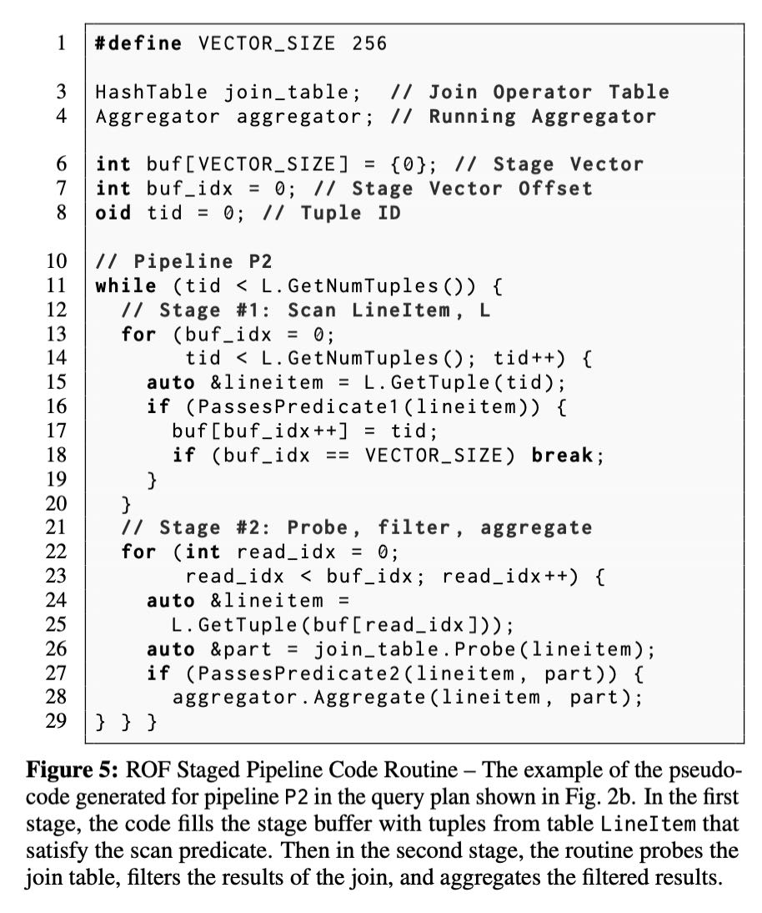
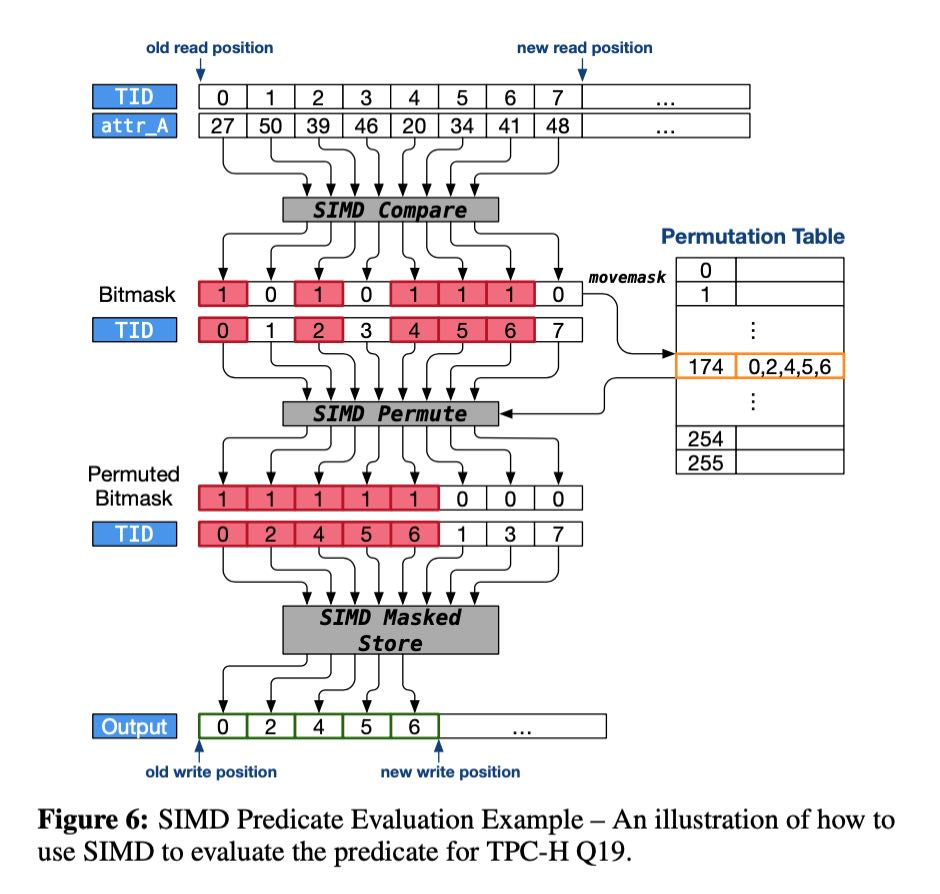

Relaxed Operator Fusion for In-Memory Databases: Making Compilation, Vectorization, and Prefetching Work Together At Last
文章提出一种ROF框架，可以将JIT，向量化以及预取综合起来：
- 单纯使用JIT， 生成代码通常是tuple-a-time的方式来进行处理的，没有办法生成向量化代码，好处是算子之间融合起来了，一次计算过程通常都是在寄存器内完成的。
- 单纯地编写向量化算子，我们只能编写primitive operator比如add, sub, mul这样，每次处理的chunk数据量是超过寄存器的，算子和算子之间存在物化以及内存读写开销。
- 实现prefetch上，JIT实现主要是software-pipelined prefetch（SPP）就是这个阶段对针对下个阶段要计算的指令做预取（似乎不太好实现），而向量化则是group prefetching（GR）针对数据批量预期。向量化预期似乎更加简单。（文章里面提到了几种预取方式，这个是我的理解）
在阅读这篇论文之前，我看在MonetDB/X100里面提到了是否可以将向量化的primitive operator融合成为compound operator, 来减少物化开销和避免内存瓶颈。我也做了实现，发现如果JIT+vec可以融合的话，的确比vec效率要高许多，并且随着处理chunk越大差距越大，此时内存成为瓶颈。这个代码和实现我放在文章最后。
整个ROF思路大概如下：
- 整个过程还是类似一样被拆分成为pipelines, 然后pipeline里面会存在多个stages.
- 每个stage里面可能会存在一个或者是多个operators. 多个operators也被融合在一起了，所以看上去每个stage其实只完成了一件事情。至于这个stage boundary是如何确定的，这个后面有提到。
- stage实现还是基于tuple的，但是和之前不同的是，stage里面会处理一批tuples比如16,32个，以此来获得向量化的好处，stage之间使用tuple-id(TID)来交换数据。
- 我个人对这里向量化方式存疑，因为毕竟是基于tuple来做的，tuple大小可能会比较大。倒是如果这些stage可以基于column来实现的话，里面可以显示地使用intrinsic指令做向量化。
- 可能他们实现方式是将tuple某个attr抽取出来形成column，然后使用SIMD在这个column上进行操作，因为tuples本身就不大所以这个开销其实也蛮小的，主要是在重整这个column上。
The primary goal of operator fusion is to minimize materializa- tion. We contend that strategic materialization can be advantageous as it can exploit inter-tuple parallelism inherent in query execu- tion. Tuple-at-a-time processing by its nature exposes no inter-tuple parallelism. Thus, to facilitate strategic materialization, one could relax the requirement that operators within a pipeline be fused to- gether. With this, the DBMS instead decomposes pipelines into stages. A stage is a partition of a pipeline in which all operators are fused together. Stages within a pipeline communicate solely through cache-resident vectors of tuple IDs. Tuples are processed sequentially through operators in any given stage one-at-a-time. If the tuple is valid in the stage, its ID is appended into the stage’s output vector. Processing remains within a stage while the stage’s output vector is not full. If and when this vector reaches capacity, processing shifts to the next stage in the pipeline, where the output vector of the previous stage serves as the input to the current. Since there is always exactly one active processing stage in ROF, we en- sure both input and output vectors (when sufficiently small) will remain in the CPU’s caches.
作者谈到ROF比传统vec的好处有：1. 每次处理的是full vector而不是input vector + selection. 如果是input vector + selection不用进行内存重整，但是似乎对于SIMD不太友好 2. 还有就是operator之间的融合。
ROF is a hybrid between pipelined tuple-at-a-time processing and vectorized processing. There are two key distinguishing character- istics between ROF and traditional vectorized processing; with the exception of the last stage iteration, ROF stages always deliver a full vector of input to the next stage in the pipeline, unlike vectorized processing that may deliver input vectors restricted by a selection vector. Secondly, ROF enables vectorization across multiple se- quential relational operators (i.e., a stage), whereas conventional vectorization operates on a single relational operator, and often times within relational operators (e.g., vectorized hash computation followed by a vectorized hash-table lookup).
下图是作者给出的ROF代码示例，可以看到buf就是缓存tuples然后交给下个stage. 可以看到stage boundary被插入在了scan节点上。后面提到了增加stage boundary的准则是：是是否有SIMD predicate以及是否有预取操作。（A DBMS’s optimizer has to make two decisions per query when generating code with the ROF model: (1) whether to enable SIMD predicate evaluation and (2) whether to enable prefetching.） 当然这个ROF模型可以比较灵活：如果每个pipeline只有一个stage的话，那么就是类似Hyper这样的方式；如果每个operator之间都增加stage boundary，每个stage都是一个Operator的话那么就是vectorized模型。所以难点应该也是如何判断以及在哪里增加stage boundary.
Our ROF technique is flexible enough to model both tuple-at-a- time processing and vectorized processing, and hence, subsumes both models. The former can be realized by creating exactly one stage per pipeline. Since a stage fuses all operators it contains and every pipeline has only one stage, pipeline loops contain no inter- mediate output vectors. Vectorized processing can be modeled by installing a stage boundary between pairs of operators in a pipeline.
Staging alone does not provide many benefits; however, it facili- ties two optimizations not possible otherwise: SIMD vectorization, and prefetching of non-cache-resident data.

SIMD vec上有两种实现方式，一种是产生full vector, 一种是input vector + selection. 作者认为full vector比较好。另外就是他们也没有实现compound operator, 可能这个实现难度比较高，而且对于在小范围的数组上，不会到达内存读写瓶颈（操作全部在Cache上）. ROF实现是在所有可能的SIMD操作上都增加stage boundary. 然后生成full vector实现方式入下图，大概就是可以拿bitmask + tid数组进行permute产生新的tid数组。
This can be done using one of two methods. Both methods assume the result of a SIMD operator resides in a SIMD register. In the first method, the operator breaks out of SIMD code to iterate over the results in the individual SIMD lanes one- at-a-time [12, 42]. Each result is pipelined to the next operator in the stage. In the second method, rather than iterate over individual lanes, the operator delivers its results in a SIMD register to the next operator in the stage. Both methods are not ideal. Breaking out of SIMD code unnecessarily ties up the registers for the duration of the stage. Delivering the entire register risks under-utilization if not all input tuples pass the operator, resulting in unnecessary computation.
Given this, we greedily force a stage boundary on all SIMD operator outputs. The advantages of this are (1) SIMD operators always deliver a 100% full vector of only valid tuples, (2) it frees subsequent operators from performing validity checks, and (3) the DBMS can generate tight loops that are exclusively SIMD. We now describe how to implement a SIMD scan using these boundaries.

插入预取操作的判断标准是，如果接下来存在超过cache的大内存访问的时候，那么就需要插入预取操作，并且在这里产生一个stage boundary. 比如上图中在Probe这个地方，如果判断hashtable会比较大的话，那么就要在这增加prefetch操作。 关于预取有好几种方式比如GP, SPP, AMAC, 这个在后面会提到，GP是相对比较简单的方式，是将整个过程拆分成为多个步骤，每个步骤都进行准备数据，并将为下个操作进行预取。 https://zhuanlan.zhihu.com/p/443829741
Our ROF model avoids all of these problems. The DBMS installs a stage boundary at the input to any operator that requires random access to data structures that are larger than the cache. This ensures that prefetch-enabled operators receive a full vector of input tuples, enabling it to overlap computation and memory accesses since these tuples can be processed independently.
Although we can employ any software prefetching technique with ROF, we decided to use GP for multiple reasons. Foremost is that generating GP code is simpler than with SPP and AMAC. GP also naturally provides synchronization boundaries between code stages for a group to resolve potential data races when inserting duplicate key-value pairs. Additionally, it was shown in [14] that SPP offered minimal performance improvement in comparison to GP while having a more complex code structure. Finally, using an open-addressing hash-table with linear probing means that all tuples have exactly one random access into the hash-table during probes and insertions (with the exception of duplicate-handling which requires two). Since all tuples in a group have the same number of random accesses even in the presence of skew, AMAC does not improve performance over GP.
文章在"Query Planning"这节重新说明了一下什么时候加入stage boundary以及codegen是怎么搞的。看上去好像SIMD predicate只有在Scan节点上增加了，对于其他节点的filter看上去好像并没有单独拆分出来。而对于prefetch可以通过query stats来估计是否要产生GP(group prefetching)的代码，如果考虑不准确的话，那么可以生成两套代码在运行时判断，然后在output增加一个stage boundary避免代码分支太多。
A DBMS’s optimizer has to make two decisions per query when generating code with the ROF model: (1) whether to enable SIMD predicate evaluation and (2) whether to enable prefetching.
During optimization, Peloton’s planner takes a greedy approach and installs a boundary after every scan operator if the scan has a SIMD-able predicate. Determining whether a given predicate can be implemented using SIMD instructions is a straightforward process that uses data-type and operation information already encoded in the expression tree. As we will show in Sect. 5, using SIMD when evaluating predicates during a scan never degrades performance.
The planner can also employ prefetching optimizations using two methods. In the first method, the query planner relies on database- and query-level statistics to estimate the sizes of all intermediate materialized data structures required by the query. For operators that require random access to data structures whose size exceeds the cache size, the planner will install a stage boundary at the operator’s input to facilitate prefetching. This heuristic can backfire if the collected statistics are inaccurate (see Sect. 5.3) and result in a minor performance degradation. An alternative approach is for the query planner to always install a stage boundary at the input to any operator that performs random memory accesses, but generate two code paths: one path that does prefetching and one that does not. The query compiler generates statistics collection code to track the size of intermediate data structures, and then uses this information to guide the program through either code path at runtime. In this way, the decision to prefetch is independent of query planning. We note that this approach will result in a code explosion as each branch requires a duplication of the remaining query logic; this process can repeat for each prefetching operator. ROF remedies this by installing a stage boundary at the operator’s output, thereby duplicating only the operator’s logic rather than the entire query plan.
我写代码对比了一下使用codegen, simd fusion, 以及simd composition的三种实现方式性能差距：https://github.com/dirtysalt/codes/blob/master/cc/xx-test/bench_codegen_simd.cpp
- f_codegen (codegen)
- f_simd_fusion (simd operator 融合在一起)
- f_simd_compose (simd operator 组合在一起)
- f_simd_compose_noalloc （不计入内存分配开销）
- f_simd_compose_noalloc_av (使用auto vectorization)
------------------------------------------------------------------------- Benchmark Time CPU Iterations ------------------------------------------------------------------------- codegen/4096 1510 ns 1527 ns 460435 codegen/40960 10851 ns 10867 ns 64535 codegen/409600 258978 ns 258981 ns 2716 simd_fusion/4096 1628 ns 1650 ns 423615 simd_fusion/40960 11238 ns 11236 ns 62196 simd_fusion/409600 264385 ns 264391 ns 2641 simd_compose/4096 6195 ns 6217 ns 111544 simd_compose/40960 71041 ns 71198 ns 9767 simd_compose/409600 3274913 ns 3274626 ns 213 simd_compose_noalloc/4096 3640 ns 3642 ns 191441 simd_compose_noalloc/40960 45630 ns 45691 ns 15411 simd_compose_noalloc/409600 1230650 ns 1230558 ns 570 simd_compose_noalloc_av/4096 3767 ns 3768 ns 186128 simd_compose_noalloc_av/40960 45186 ns 45242 ns 15479 simd_compose_noalloc_av/409600 1158468 ns 1158346 ns 603
可以看到，尺寸越大内存带宽可能会受限，以及内存分配速度也会产生限制：
- codegen, simd_fusion在所有尺寸上性能是差不多的
- no_alloc和no_alloc_av差别不大，但是和codegen/simd_fusion相比随着尺寸越大差距越大
- simd_compose 也可以看到内存分配损失也是比较大的
#include <benchmark/benchmark.h> #include <immintrin.h> #include <random> std::vector<int32_t> ConstructRandomSet(int64_t size, int32_t seed) { std::vector<int32_t> a; a.reserve(size); std::mt19937_64 rng; rng.seed(seed); for (size_t i = 0; i < size; ++i) { a.emplace_back(i); } return a; } void f_codegen(int32_t* a, int32_t* b, int32_t* c, int32_t* d, int n) { for (int i = 0; i < n; i++) { d[i] = 3 * a[i] + 4 * b[i] + 5 * c[i]; } } void f_simd_fusion(int32_t* a, int32_t* b, int32_t* c, int32_t* d, int n) { __m512i c0 = _mm512_set1_epi32(3); __m512i c1 = _mm512_set1_epi32(4); __m512i c2 = _mm512_set1_epi32(5); int i = 0; for (i = 0; (i + 16) < n; i += 16) { __m512i x = _mm512_loadu_epi32(a + i); __m512i y = _mm512_loadu_epi32(b + i); __m512i z = _mm512_loadu_epi32(c + i); x = _mm512_mul_epi32(x, c0); y = _mm512_mul_epi32(y, c1); x = _mm512_add_epi32(x, y); z = _mm512_mul_epi32(z, c2); x = _mm512_add_epi32(x, z); _mm512_storeu_epi32(d + i, x); } while (i < n) { d[i] = 3 * a[i] + 4 * b[i] + 5 * c[i]; i += 1; } } #define RE __restrict__ void f_add(int32_t* RE a, int32_t* RE b, int32_t* RE c, int n) { int i = 0; for (i = 0; (i + 16) < n; i += 16) { __m512i x = _mm512_loadu_epi32(a + i); __m512i y = _mm512_loadu_epi32(b + i); x = _mm512_add_epi32(x, y); _mm512_storeu_epi32(c + i, x); } while (i < n) { c[i] = a[i] + b[i]; i += 1; } } void f_mul(int32_t* RE a, int32_t b, int32_t* RE c, int n) { int i = 0; __m512i c0 = _mm512_set1_epi32(b); for (i = 0; (i + 16) < n; i += 16) { __m512i x = _mm512_loadu_epi32(a + i); x = _mm512_mul_epi32(x, c0); _mm512_storeu_epi32(c + i, x); } while (i < n) { c[i] = a[i] * b; i += 1; } } void f_add_autovec(int32_t* RE a, int32_t* RE b, int32_t* RE c, int n) { for (int i = 0; i < n; i++) { c[i] = a[i] + b[i]; } } void f_mul_autovec(int32_t* RE a, int32_t b, int32_t* RE c, int n) { for (int i = 0; i < n; i++) { c[i] = a[i] * b; } } void f_simd_compose(int32_t* a, int32_t* b, int32_t* c, int32_t* d, int n) { std::vector<int32_t> t0(n), t1(n), t2(n), t3(n), t4(n); f_mul(a, 3, t0.data(), n); f_mul(b, 4, t1.data(), n); f_mul(c, 5, t2.data(), n); f_add(t0.data(), t1.data(), t3.data(), n); f_add(t2.data(), t3.data(), d, n); } static void codegen(benchmark::State& state) { size_t n = state.range(0); auto a = ConstructRandomSet(n, 10); auto b = ConstructRandomSet(n, 20); auto c = ConstructRandomSet(n, 30); std::vector<int32_t> d(n); // Code inside this loop is measured repeatedly for (auto _ : state) { state.PauseTiming(); d.assign(n, 0); state.ResumeTiming(); f_codegen(a.data(), b.data(), c.data(), d.data(), n); } } static void simd_fusion(benchmark::State& state) { size_t n = state.range(0); auto a = ConstructRandomSet(n, 10); auto b = ConstructRandomSet(n, 20); auto c = ConstructRandomSet(n, 30); std::vector<int32_t> d(n); // Code inside this loop is measured repeatedly for (auto _ : state) { state.PauseTiming(); d.assign(n, 0); state.ResumeTiming(); f_simd_fusion(a.data(), b.data(), c.data(), d.data(), n); } } static void simd_compose(benchmark::State& state) { size_t n = state.range(0); auto a = ConstructRandomSet(n, 10); auto b = ConstructRandomSet(n, 20); auto c = ConstructRandomSet(n, 30); std::vector<int32_t> d(n); // Code inside this loop is measured repeatedly for (auto _ : state) { state.PauseTiming(); d.assign(n, 0); state.ResumeTiming(); f_simd_compose(a.data(), b.data(), c.data(), d.data(), n); } } static void simd_compose_noalloc(benchmark::State& state) { size_t n = state.range(0); auto a = ConstructRandomSet(n, 10); auto b = ConstructRandomSet(n, 20); auto c = ConstructRandomSet(n, 30); std::vector<int32_t> d(n); // Code inside this loop is measured repeatedly for (auto _ : state) { state.PauseTiming(); d.assign(n, 0); std::vector<int32_t> t0(n), t1(n), t2(n), t3(n), t4(n); state.ResumeTiming(); f_mul(a.data(), 3, t0.data(), n); f_mul(b.data(), 4, t1.data(), n); f_mul(c.data(), 5, t2.data(), n); f_add(t0.data(), t1.data(), t3.data(), n); f_add(t2.data(), t3.data(), d.data(), n); } } static void simd_compose_noalloc_av(benchmark::State& state) { size_t n = state.range(0); auto a = ConstructRandomSet(n, 10); auto b = ConstructRandomSet(n, 20); auto c = ConstructRandomSet(n, 30); std::vector<int32_t> d(n); // Code inside this loop is measured repeatedly for (auto _ : state) { state.PauseTiming(); d.assign(n, 0); std::vector<int32_t> t0(n), t1(n), t2(n), t3(n), t4(n); state.ResumeTiming(); f_mul_autovec(a.data(), 3, t0.data(), n); f_mul_autovec(b.data(), 4, t1.data(), n); f_mul_autovec(c.data(), 5, t2.data(), n); f_add_autovec(t0.data(), t1.data(), t3.data(), n); f_add_autovec(t2.data(), t3.data(), d.data(), n); } } // Register the function as a benchmark static const int N0 = 4096; static const int N1 = 40960; static const int N2 = 409600; BENCHMARK(codegen)->Arg(N0)->Arg(N1)->Arg(N2); BENCHMARK(simd_fusion)->Arg(N0)->Arg(N1)->Arg(N2); BENCHMARK(simd_compose)->Arg(N0)->Arg(N1)->Arg(N2); BENCHMARK(simd_compose_noalloc)->Arg(N0)->Arg(N1)->Arg(N2); BENCHMARK(simd_compose_noalloc_av)->Arg(N0)->Arg(N1)->Arg(N2);